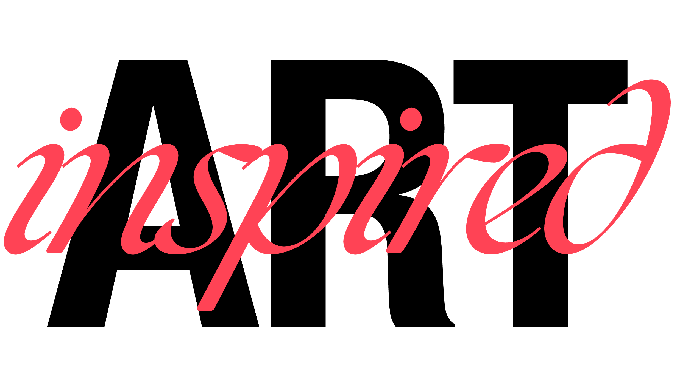

Gib einen Suchbegriff ein und starte die Suche.
The Metropolitan Museum of Art Collection API

ART inspired dient als Inspirationsquelle für Kreative aller Art und öffnet den Zugang zu Kunstwerken aus der ganzen Welt – von zeitlosen Meisterwerken bis zu verborgenen Schätzen aus der Sammlung des Metropolitan Museum of Art in New York.